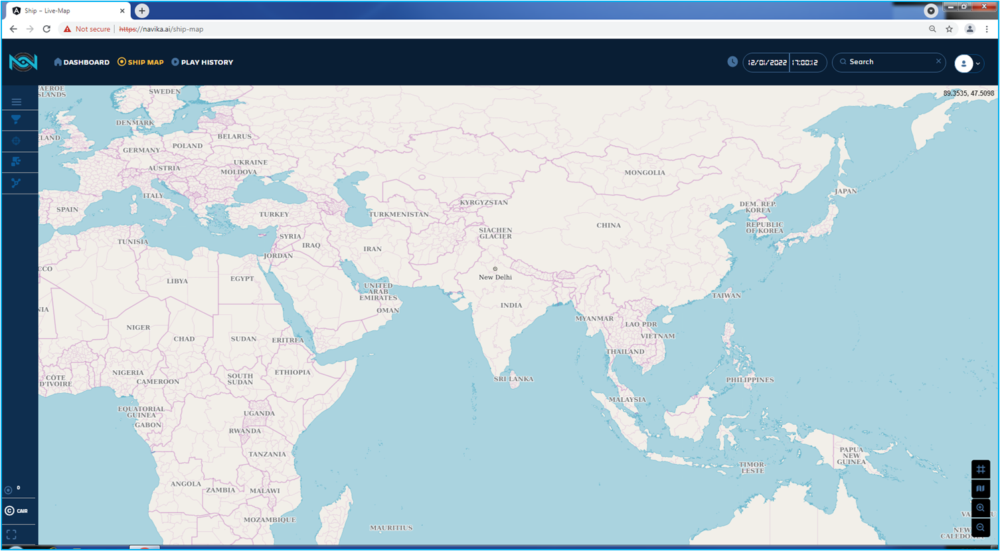
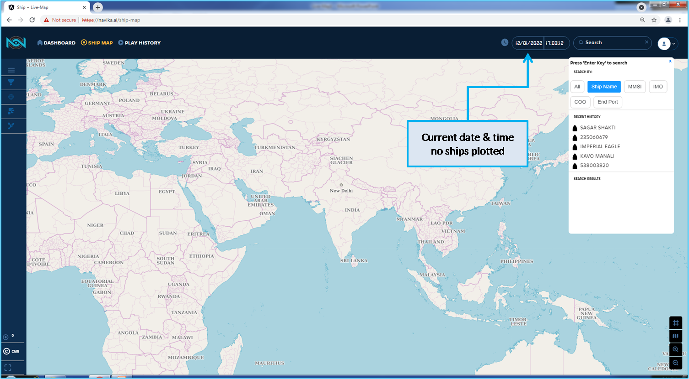
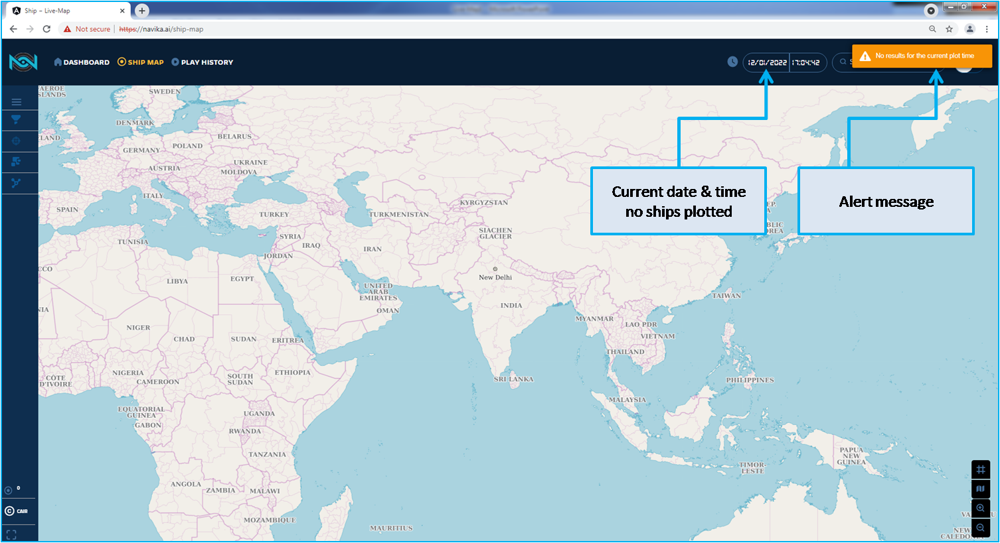
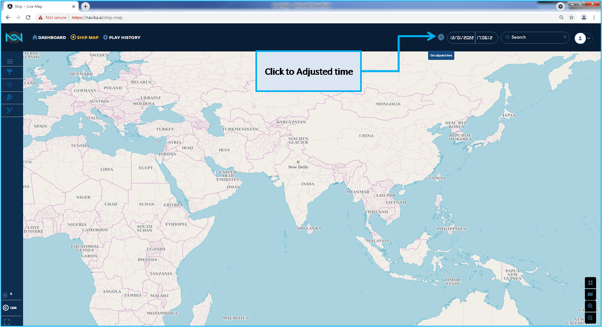
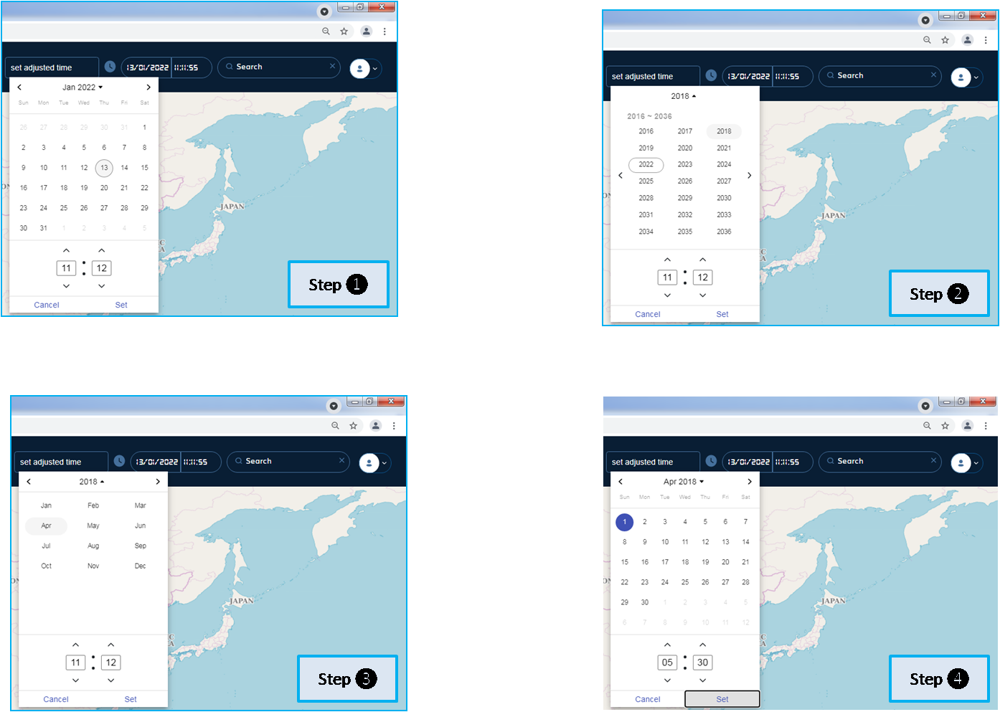
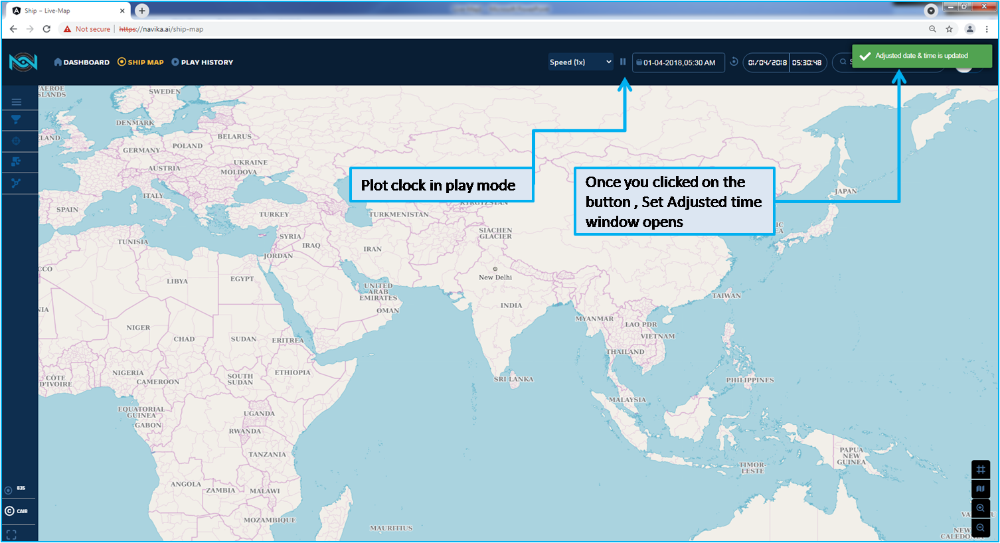
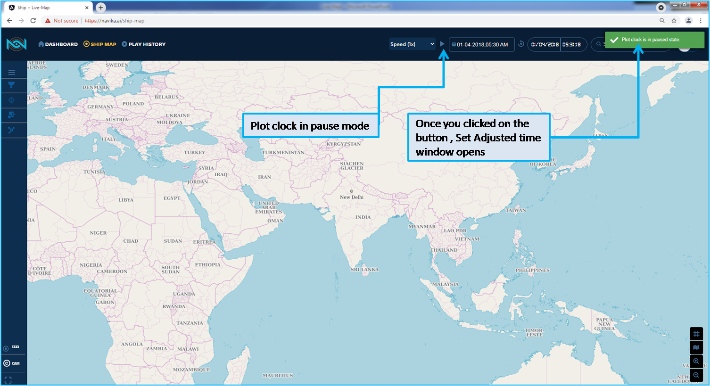
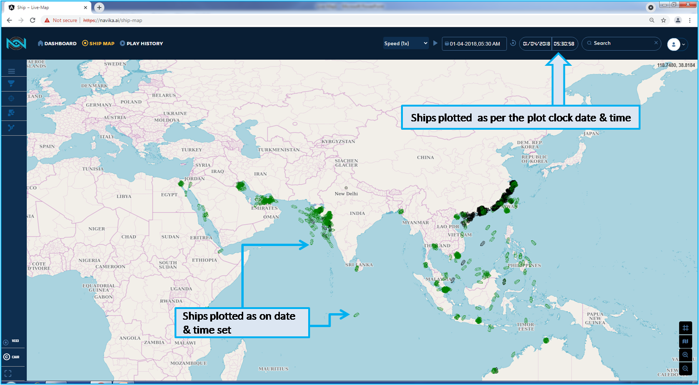

Live map¶
When you login to NAVIKA application, you will be in the LIVE page. In the Fig. 63 for login refer the section “Login”.
Live map features and functions are covered in this section.
We assume you are familiar with the Navigation bar, menu and other features. Refer section Description in this manual
Fig. 63 Navika Login page with current time¶
Let us start with Live map functions, begin with Search functions, since we are in Current date and time,
In the Fig. 64 you can search Ship name, MMSI, IMO, COO, End port function. Note, you can refer section on Search for complete details.
Fig. 64 Search function in Current Time¶
As on this date and time there is no data available for the ships to be plotted. As we are not started yet with LIVE data streaming for the plotting of the ships in this application release.
In the Fig. 65 you can observe the alert message. Note, you can refer section on Search for complete details.
Fig. 65 With Current date Alert Message for search¶
In the Fig. 66 indicate the how you can start to Adjust Time
Fig. 66 Click the button to adjust time¶
In the Fig. 67 provide the steps to adjust the time. For ease of example, 01-Apr-2018 05:30 is used. After you click on the button you will observe “Set adjusted time” field Click once again on the field, calendar appear in the your current date and time. Follow the step 2 as per the Fig. 67
Fig. 67 Steps to Adjust time¶
In the Fig. 68 indicate after you have set the date and time. Observe the alert message pop-up. the plot clock is in play state. In this page there is no ships plotted.
Fig. 68 Plot clock is in play mode¶
You have observed after set the adjusted time, plot clock is in play mode, as indicated in Fig. 69
Fig. 69 Plot clock is in Play mode¶
In the Fig. 70 you click on the button to pause the plot clock, so you observe the there is no refresh at this instance. Regarding rate of refresh of the application will be explained in the speed set topic in this section.
Fig. 70 Plot clock is in Pause mode¶
In this Fig. 71 you observe the ships are plotted with pause state, as there is no trajectory of any ships.
The plotted ships are Last Known Postion at the time set by you. The position is indicated is 30 minutes prior to the plot clock time,
means time is 01-Apr-2018 05:30:38 Last known Positions of the ship is 01-Apr-2018 05:00:38.
The web page will be refreshed every 30 seconds. Web Refresh will be explained with plot clock in the play mode in preceding section.
Fig. 71 Ship plotted as per plot clock Time¶